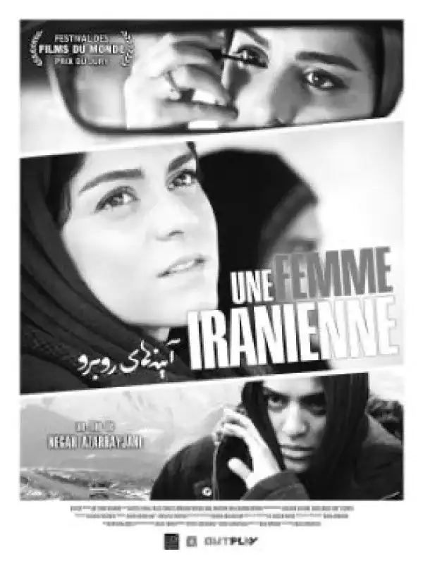
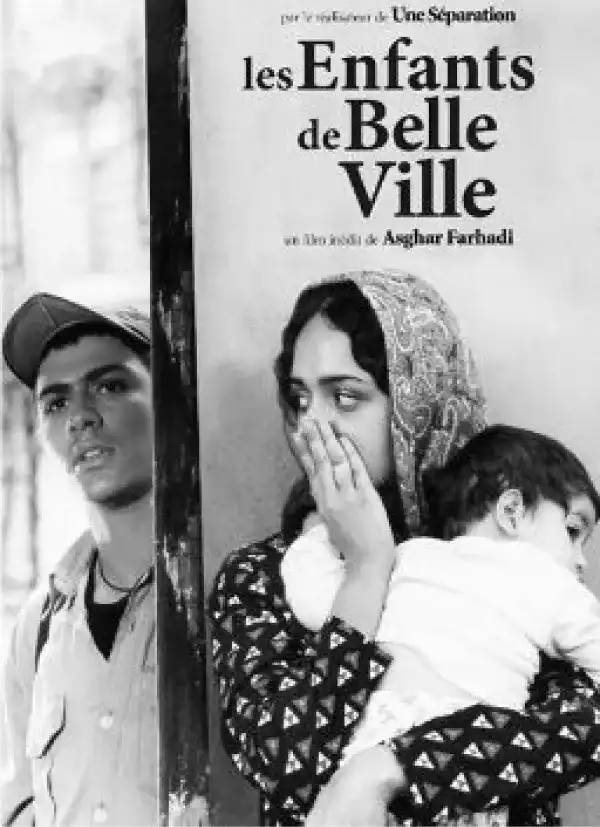
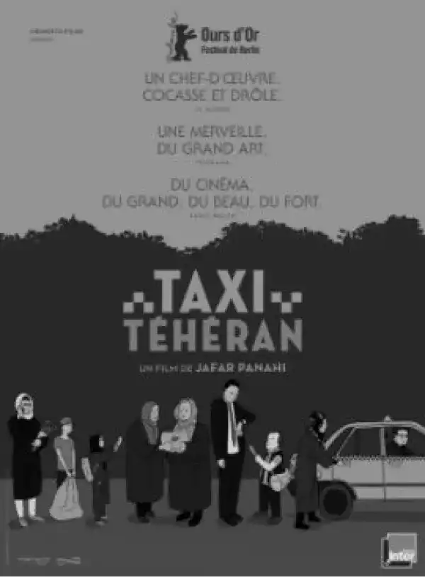
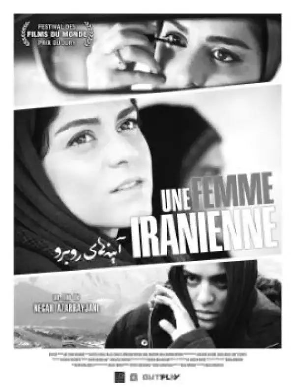
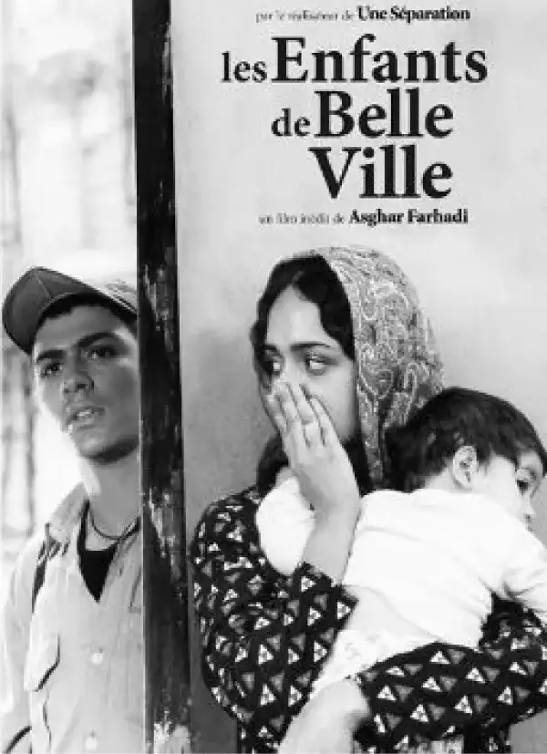
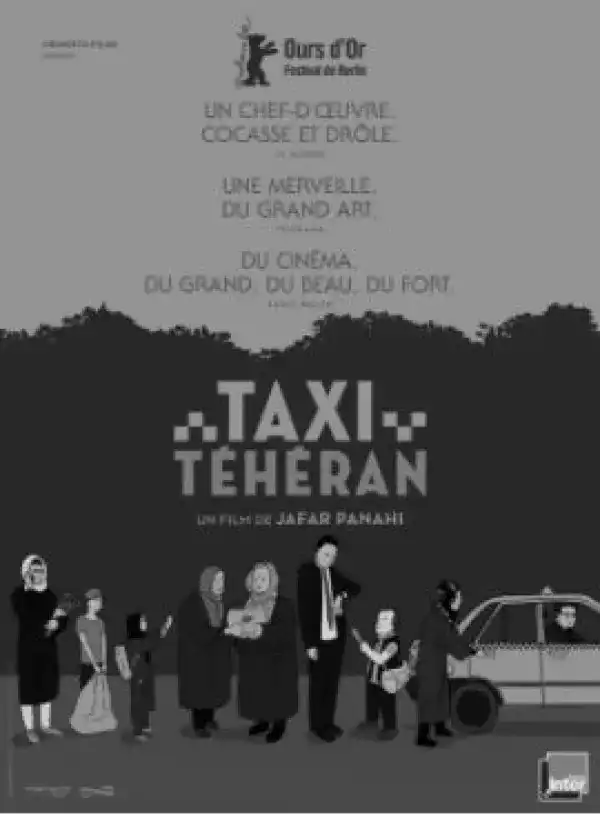

Persepolis
Le long métrage, de l’histoire de Marjane Satrapi entre constrate, révolte et émotion…
Persepolis est un long métrage d’animation tiré de la bande dessinée « Persepolis », une autobiographie de Marjane Satrapi. Sorti en 2007, il est réalisé par Marjane Satrapi elle-même et Vincent Paronnaud.
Ce long métrage a été censuré surtout dans les pays musulmans.
Il a reçu deux césars dont le césar de la meilleure adaptation, ainsi que le « Prix du jury » au festival de Cannes « Persepolis » a été nominé aux Oscars dans la catégorie « meilleur film étranger ».

Synopsis
Téhéran, 1978. Marjane a huit ans, elle vit avec ses deux parents modernes et cultivés (comme beaucoup d’iraniens de l’époque) et porte un attachement fort à sa grand-mère.
Elle suit avec beaucoup d’enthousiasme et malgré son jeune âge les événements dans son pays, la révolution qui mène à la chute du Shah. La fondation de la “République Islamique”, débute alors. Sa vie change entièrement : les commissaires de la révolution imposent les codes vestimentaires, les comportements et créent de nouvelles lois. Marjane est alors obligée de porter le voile, elle songe alors à des idées révolutionnaire.
1980, L’Irak attaque l’Iran, menant à des bombardements, des pertes, les privations. La vie de la jeune fille devient de plus en plus difficile. Ses idées de rébellien devenant plus fortes, les privations, les disparitions de certains de ses proches, entre autre, son oncle Anouche, l’affectent plus que jamais.
Ses parents décident alors de l’envoyer en Autriche pour la poursuite de ses études, pour la protéger. Elle y découvre alors la liberté, l’amour et sort de cette expérience totalement grandie et différent avec une perception sur la vie et le monde, transformée.
Elle décide de retourner en Iran pour être plus proche de sa famille et retrouver son pays natal qui lui manqué.
Sous la motivation de sa grand-mère, elle s’inscrit aux beaux-arts en Iran, où ses idées et son âme révolutionnaire ne vont faire que s’élever.
Ce film d’animation raconte avec de l’humour et de l’émotion son évolution, sa ,ses relations avec les autres et surtout avec son pay d’origine, l’Iran.
Bande annonce
Films assciés
 




